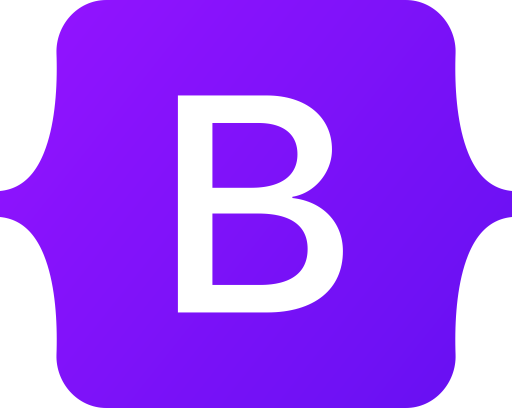
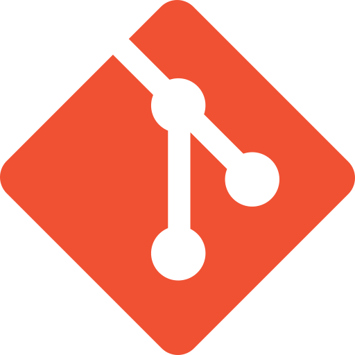

HE
LLO.
LLO.
Scroll Down
ABOUT
My Introduction
I'am Chakib Brahimi
Front-end devlopper
Hi, I'm Chakib Brahimi, a front-end developer withexpertise in HTML, CSS, JavaScript, SASS, PugJS, GulpJS, VueJS, and Jest. I love building beautiful and functional websites that provide an exceptional user experience.I'm particularly interested in mixins and Gulp tasks, and enjoy sharing my knowledge with others through posts and tutorials. Follow me for tips, tutorials, and inspiration on all things web development.
SKILLS
My Technical Level
Principal Languages
Html
Css
Js
Libraries & Frameworks
Bootstrap
Sass
PugJs
GulpJs
VueJs
NodeJs
Git
Github
ScrollMagic
GreenSock
Design Frameworks
Photoshop
Canva
(+) Click on any Logo
What can you do with HTML?
-
Creating a basic website:
You can use HTML to create a basic website with text, images, and links.
-
Building a responsive website:
HTML can be used with CSS (Cascading Style Sheets) and JavaScript to create responsive websites that adjust their layout and content based on the user's device.
-
Creating forms:
HTML allows you to create forms for user input, such as contact forms or registration forms.
-
Adding multimedia content:
HTML supports multimedia content such as videos, audio, and images. You can use HTML to embed these types of content into your web pages.
-
Creating interactive features:
HTML can be used with JavaScript to create interactive features such as animations, sliders, and menus.
-
Implementing accessibility features:
HTML supports accessibility features such as alt text for images and semantic markup for screen readers, which makes your website more inclusive and accessible to users with disabilities.
What can you do with CSS?
-
Customizing the layout of your website:
You can use CSS to control the positioning and layout of HTML elements on your web pages, such as the placement of text, images, and other content.
-
Styling text and fonts:
CSS allows you to customize the font family, size, color, and style of text on your website, which helps to create a consistent and professional look.
-
Enhancing the visual appeal of your website:
With CSS, you can add colors, gradients, shadows, and other visual effects to your website, which can make it more engaging and visually appealing to users.
-
Creating responsive designs:
CSS can be used to create responsive designs that adjust the layout and content of your website based on the size of the user's screen, which helps to ensure that your website looks good on all devices.
-
Implementing accessibility features:
CSS can be used to create accessibility features, such as increasing the font size or adjusting the contrast of text, which makes your website more accessible to users with disabilities.
What can you do with JavaScript?
-
Creating dynamic user interfaces:
JavaScript can be used to create interactive user interfaces that respond to user input, such as dropdown menus, pop-ups, and tooltips.
-
Validating user input:
JavaScript can be used to validate user input in forms and other input fields, which can help to prevent errors and improve the user experience.
-
Handling events:
JavaScript can be used to handle events such as clicks, mouse movements, and key presses, which can be used to trigger specific actions or behaviors on your website.
-
Accessing APIs:
JavaScript can be used to access and interact with APIs (Application Programming Interfaces) provided by third-party services, which can allow you to add features such as maps, social media integrations, or weather updates to your website.
-
Creating games and simulations:
JavaScript can be used to create games and simulations that run directly in the browser, which can be a fun and engaging way to add interactivity to your website.
What can you do with Bootstrap?
-
Creating responsive layouts:
Bootstrap provides a responsive grid system that allows you to create flexible and responsive layouts for your website that adjust based on the user's device.
-
Using pre-designed UI components:
Bootstrap provides a set of pre-designed UI components such as forms, buttons, navigation menus, and alerts that can be used to create professional-looking web pages quickly.
-
Styling your website easily:
Bootstrap provides a wide range of CSS classes that can be used to style your website quickly and easily, without needing to write custom CSS.
-
Implementing JavaScript plugins:
Bootstrap includes a variety of JavaScript plugins, such as modals, carousels, and tooltips, that can be easily integrated into your website.
-
Customizing your theme:
Bootstrap can be customized by using Sass variables, which makes it easy to modify the colors, fonts, and other design elements to match your brand or personal preference.
What can you do with PugJs?
Pug uses indentation to define the structure of your HTML code, which makes it easier to understand the hierarchy of your content. Pug also supports the use of variables and mixins, which makes it easy to reuse code and keep your templates consistent.
-
Concise and readable syntax:
Pug's simplified syntax allows you to write HTML code more quickly and with fewer characters. This makes it easier to read and understand your code, especially when working on complex templates.
-
Reusability:
Pug allows you to define mixins and include partials, which makes it easy to reuse code across your templates. This can save time and effort, and helps ensure consistency across your website.
-
Improved maintenance:
Because Pug uses indentation to define the structure of your HTML code, it is easier to maintain and modify your templates over time. This can help to reduce errors and improve the overall quality of your website.
-
Integrations:
Pug can be used with popular frameworks such as Express.js, Hapi.js, and Meteor.js, which makes it easy to integrate into your existing web development workflow.
What can you do with Sass?
-
Variables:
Sass allows you to define variables that can be reused throughout your stylesheet. This can make your code more efficient, consistent, and easier to maintain.
-
Nesting:
Sass allows you to nest selectors within each other, making your code more readable and easier to understand. This can help to reduce the amount of code you need to write and improve your overall productivity.
-
Mixins:
Sass allows you to define mixins, which are reusable pieces of code that can be called with a single line of code. Mixins can help to reduce the amount of code you need to write and improve the consistency of your styles.
-
Inheritance:
Sass allows you to use inheritance, which is a way to define a base style and then extend it to create new styles. This can help to reduce the amount of code you need to write and make your code more maintainable.
-
Operators:
Sass allows you to use operators in your styles, such as +, -, *, and /, which can help to make your code more efficient and easier to read.
What can you do with GulpJs?
-
Task automation:
Gulp allows you to automate tasks in your web development workflow, which can help save time and improve productivity. You can define tasks such as minification, concatenation, and compilation in a Gulpfile and then run them automatically.
-
Code optimization:
Gulp provides built-in plugins that allow you to optimize your code for better performance. For example, you can minify your CSS and JavaScript files to reduce their file size, which can improve page load times.
-
Easy configuration:
Gulp uses a simple and intuitive syntax for defining tasks, which makes it easy to configure and customize. You can define tasks that meet your specific needs and requirements.
-
Stream-based processing:
Gulp uses a stream-based processing system that allows you to process files as they are streamed through the system. This can help improve performance and reduce memory usage.
-
Large plugin ecosystem:
Gulp has a large and active plugin ecosystem that provides a wide range of plugins for common tasks such as minification, compilation, and optimization. This makes it easy to find and use the plugins you need to automate your workflow.
What can you do with VueJs?
-
Component-based architecture:
Vue.js is built around a component-based architecture, allowing developers to create reusable UI components. This makes it easy to build complex UIs, while also making them easier to test and maintain.
-
Reactive data binding:
Vue.js provides reactive data binding, which means that changes in data are automatically reflected in the UI. This can help to reduce the amount of code needed to manage data and make it easier to build responsive UIs.
-
Directives:
Vue.js provides a set of directives that allow you to manipulate the DOM in a declarative way. This can make it easier to manage the UI and improve the performance of your application.
-
Virtual DOM:
Vue.js uses a virtual DOM, which can help to improve the performance of your application by reducing the number of DOM manipulations required.
-
Computed properties:
Vue.js provides computed properties, which can be used to derive new data from existing data. This can help to keep your data and UI in sync, while also reducing the amount of code needed to manage data.
-
Templating:
Vue.js provides a powerful templating system that allows you to define your UI in a declarative way. This can make it easier to manage the UI and improve the readability of your code
What can you do with NodeJs?
-
Server-side programming:
Node.js allows developers to write server-side JavaScript code, making it easier to build full-stack web applications using a single language. It provides a range of built-in modules and libraries for networking, file system access, and other server-side tasks.
-
Scalability:
Node.js is designed to be highly scalable, making it a popular choice for building high-performance web applications that can handle a large number of concurrent users. It provides a non-blocking I/O model, which means that it can handle multiple requests simultaneously without blocking the event loop.
-
Fast development:
Node.js provides a range of built-in modules and libraries, making it easy to build web applications quickly. It also has a large and active community, providing access to a wide range of open-source modules and libraries.
-
Real-time applications:
Node.js is well-suited for building real-time applications, such as chat applications or multiplayer games. It provides built-in support for WebSockets and can handle a large number of concurrent connections.
-
Cross-platform development:
Node.js is cross-platform, which means that it can be run on a wide range of operating systems, including Windows, Linux, and macOS. This makes it easier to develop and deploy web applications on different platforms.
What can you do with Git?
-
Version control:
Git provides version control, allowing developers to track changes to their code over time. This makes it easier to manage different versions of their codebase and roll back changes if needed.
-
Collaboration:
Git allows developers to collaborate with other developers on the same codebase. It provides features for merging changes and resolving conflicts between different versions of the code.
-
Branching and merging:
Git provides powerful branching and merging features, allowing developers to create and manage branches for different features or experiments. This can help to keep code changes separate and avoid conflicts between different features.
-
Distributed architecture:
Git is designed to be a distributed version control system, allowing developers to work on their code offline and synchronize changes with other developers later. This makes it easier to work in distributed teams or in environments with poor network connectivity.
-
Open-source community:
Git has a large and active open-source community, providing access to a wide range of plugins, tools, and libraries for working with Git. This makes it easy to customize and extend the functionality of Git to meet specific needs
What can you do with Github?
-
Hosting:
GitHub provides hosting for software development projects, allowing developers to store their code and related files in a central location. This makes it easier to collaborate with other developers and manage different versions of the codebase.
-
Version control:
GitHub is based on Git, providing version control features for tracking changes to code over time. This makes it easy to manage different versions of the codebase and roll back changes if needed.
-
Collaboration:
GitHub provides features for collaboration, such as pull requests, issues, and comments, allowing developers to discuss and review changes to the codebase. This makes it easier to work together and ensure that code changes are high-quality and meet project requirements.
-
Open-source community:
GitHub has a large and active open-source community, providing access to a wide range of projects and tools for software development. This makes it easy to find and contribute to open-source projects, learn from other developers, and share your own work with others.
-
Integration:
GitHub provides integration with a wide range of third-party tools and services, such as continuous integration and deployment platforms, code review tools, and project management software. This makes it easy to automate workflows and streamline the software development process.
What can you do with Scroll Magic?
-
Scroll-based animations:
ScrollMagic allows you to create animations that are triggered by scrolling. This can be used to animate elements as they enter or exit the viewport, or to create parallax effects that make it appear as if different layers are moving at different speeds.
-
Pinning:
ScrollMagic allows you to "pin" elements to the viewport, making them remain in place as the user scrolls. This can be used to create sticky headers, sidebars, or other UI elements that remain visible as the user scrolls through the content.
-
Triggering events:
ScrollMagic allows you to trigger events based on scroll position. This can be used to trigger animations, play sounds, or perform other actions when the user reaches a certain point in the content.
-
Control animations:
ScrollMagic allows you to control the timing and sequencing of animations, making it possible to create complex animations and interactions that respond to user input or other events.
-
Integration:
ScrollMagic can be integrated with other JavaScript libraries, such as GreenSock (GSAP) for creating complex animations, or with other plugins and tools to extend its functionality.
What can you do with Green Sock?
-
Timeline-based animations:
GreenSock allows you to create timeline-based animations that control the timing and sequencing of multiple animations. This makes it easy to create complex animations with precise control over their timing and duration.
-
Morphing animations:
GreenSock provides advanced morphing capabilities that allow you to smoothly transition between different shapes, colors, and other properties. This makes it easy to create complex and dynamic animations that respond to user input or other events.
-
Advanced easing functions:
GreenSock provides a range of advanced easing functions that can be used to create smooth and natural-looking animations. This includes functions such as Elastic, Bounce, and Back, which can be used to create realistic physics-based animations.
-
Performance:
GreenSock is designed to be highly performant, with a focus on smooth animations and minimal CPU usage. This makes it a popular choice for creating animations on the web, where performance can be a critical factor in the user experience.
-
Integration:
GreenSock can be integrated with a range of other web technologies, such as React, Vue.js, and Angular, as well as with other JavaScript libraries and plugins to extend its functionality.
What can you do with Photoshop?
-
Image editing:
Photoshop provides a range of tools and features for editing images, including cropping, resizing, retouching, and color correction. This makes it possible to enhance and manipulate images to achieve the desired result.
-
Digital artwork:
Photoshop is a popular tool for creating digital artwork, such as illustrations, icons, and logos. It provides a range of drawing tools, brushes, and other features that make it easy to create complex and detailed artwork.
-
User interface design:
Photoshop is often used to design user interfaces for websites, mobile apps, and other digital products. It provides features such as layer styles, gradients, and text tools, which make it easy to create visually appealing and functional user interfaces.
-
Filters and effects:
Photoshop provides a range of filters and effects that can be used to apply various visual effects to images, such as blurring, sharpening, and distortion. This can be used to create unique and interesting visual effects.
What can you do with Canva?
-
Social media graphics:
Canva provides a range of pre-designed templates for creating graphics for social media platforms, such as Instagram, Facebook, and Twitter. These templates are optimized for each platform's specific requirements, making it easy to create visually appealing posts that stand out in users' feeds.
-
Presentations:
Canva can be used to create professional-looking presentations, with a range of pre-designed templates and drag-and-drop tools that make it easy to create slides, add text and graphics, and customize the design.
-
Marketing materials:
Canva can be used to create a wide range of marketing materials, such as flyers, posters, and brochures. Its pre-designed templates and drag-and-drop tools make it easy to create visually appealing designs that can help promote a business or product.
-
Collaborative design:
Canva allows multiple users to collaborate on a design project, with features such as commenting and sharing that make it easy to work together on a design.